Практичні курси · журнал «ДентАрт» 2016 №1
Сучасний погляд на лікування пульпітів тимчасових зубів
MODERNITY IN PULPITIS TREATMENT OF THE PRIMARY TEETH
Вступ
Пульпіти тимчасових зубів часто зустрічаються у дітей, і не завжди у стоматологів існує єдина думка з приводу лікування пульпи зуба [21, 23, 32, 44]. Сьогодні біоактивні матеріали витісняють ті матеріали, які раніше вважалися «золотим стандартом» у стоматології дитячого віку [21, 27, 29, 38], але не мають нічого спільного з органозберігаючою концепцією [5, 9, 10, 30, 40, 42]. Крім вибору матеріалу для прямої, устьової і кореневої обтурації, перед стоматологами виникає питання про правильність діагнозу і подальшу тактику лікування тимчасового зуба [8, 9, 10, 19, 20, 39, 40, 42, 43, 44, 45, 48].
Найчастіше пульпіт тимчасових зубів виникає в результаті нелікованого каріозного процесу, тому для того, щоб вибрати правильну тактику лікування, необхідно оцінити патологічний процес за кількома критеріями. У відповідності з класифікацією МКХ-10, каріозні ураження зубів поділяють за анатомічними межами — карієс емалі (К 02.0), карієс дентину (К 02.1), карієс цементу (К 02.2); за перебігом каріозного процесу — призупинений карієс зубів (К 02.3) та інші діагнози (одонтоклазія, неуточнений карієс зубів, інший карієс зубів). Крім цієї класифікації, існують також інші, які вказують на характер ураження, ступінь активності, локалізацію каріозного процесу і глибину ураження. Але як вибрати найзручнішу для клінічного застосування класифікацію, яка і допоможе в подальшому застосувати правильну тактику лікування? [6, 32, 44, 45]
Одиничний і множинний карієс, найгостріший, гострий і хронічний карієс, низька, середня і висока ступінь активності карієсу відображають швидкість і тяжкість руйнування зубів, але на сьогодні не існує загальноприйнятих параметрів для їх визначення, а характеристики збігаються з характеристиками перебігу карієсу у дітей з I, II, III ступенями активності патологічного процесу. Для того, щоб оцінити ймовірність сприятливої реакції з боку пульпи при виникненні глибокого карієсу у дітей [3, 19, 20], необхідно розглядати здатність пульпи до регенерації, оцінюючи гістофункціональну стадію її розвитку [1, 2, 4, 6].
Вибір методу лікування
Пульпа тимчасових зубів — це пухка соковита тканина, багата молодими малодиференційованими клітинами, наявними у всіх її шарах. Пульпа тимчасових зубів добре забезпечена нервовими волокнами і має добре розвинену кровоносну і лімфатичну мережу [1, 3]. З цього випливає, що анатомо-фізіологічні дані пульпи у дітей дозволяють розглядати її як тканину, багату на реактивні елементи, яка має велику життєдіяльність, величезні захисно-пристосувальні механізми [2, 4]. Але життєдіяльність пульпи і її функціональна активність у тимчасових зубах також не завжди однакова [48], і це слід враховувати, обираючи ту чи іншу тактику лікування карієсу і його ускладнень.
Активність пульпи залежить від стадії її розвитку: I-й період — розвиток функціональної активності пульпи (формування кореня зуба); II-й період — функціональна зрілість пульпи (стабілізація сформованого кореня зуба); III-й період — згасання функціональних властивостей пульпи (розсмоктування кореня зуба) [20, 28, 44]. Найбільш уразлива пульпа тимчасових зубів на стадії несформованих коренів (різці дворічних дітей; ікла, моляри — трирічних) [48]. Якщо в ці терміни тимчасовий зуб уражається глибоким каріозним процесом, то ймовірність незворотного пульпіту досить висока, оскільки захисні властивості пульпи в стадії несформованих коренів ще недостатньо потужно впоруються з виниклою запальною реакцією, її основна функція в цей період — формування кореневої системи, а дентин, відповідно, слабомінералізований і більше піддається руйнуванню та процесам демінералізації внаслідок каріозного процесу [8, 45]. У стадії сформованих коренів пульпа впорується із захисними функціями, що призводить до утворення вторинного дентину, структура якого більш правильна, ніж у постійних зубах.
Вік, найбільш сприятливий для прогнозованого мінімально-інвазивного лікування глибоких каріозних процесів — 2,5-5,5 року (різці), 3,5-7,5 року (ікла, моляри). У стадії сформованих коренів і повної функціональної активності пульпи при будь-яких процесах, що викликають запальні реакції з її боку, пульпа залишається максимально активною і відновлюється (регенерація) або адаптується (атрофія) під час глибоких каріозних процесів [1, 19, 20, 28, 32]. Третя стадія функціональної активності пульпи — це період згасання. У цей період процеси пульпи збалансовані між собою — захисні властивості пульпи не падають, але в той же час додаються процеси резорбції кореневої частини зуба [48].
Для того, щоб обрати тактику лікування глибокого карієсу і його ускладнень, також необхідно враховувати форму активності процесу [6, 8, 19, 44, 48]. Найбільш несприятлива і така, що часто зустрічається, форма перебігу каріозного процесу у дітей до 3-х років — це декомпенсована форма перебігу карієсу. Такий вид карієсу має швидкий перебіг, і несвоєчасне лікування найчастіше призводить до глибоких каріозних процесів і запальних реакцій з боку пульпи. Каріозний процес, що виникає у дітей після 3-х років, більш прогнозований і набуває компенсованої форми активності. Каріозні ураження локалізуються, як правило, на жувальних поверхнях тимчасових молярів і характеризуються низькою інтенсивністю розвитку. Уражений дентин пігментований, відрізняється від здорових тканин, і після видалення зміненого дентину дно і стінки порожнини мають типовий для компенсованої форми активності каріозного процесу вигляд — блискуча, щільна і рівна поверхня. Субкомпенсована (проміжна) форма активності у тимчасових зубах зустрічається рідко або її неможливо об'єктивно оцінити, тому в тимчасових зубах об'єктивнішим буде поділ на компенсовану і декомпенсовану форми активності карієсу [3, 6, 19].
Підбиваючи підсумки щодо перебігу каріозного процесу, а також функціональної активності пульпи, можна виділити основні параметри перебігу процесу і розвитку зуба, які допоможуть надалі обрати правильну тактику лікування пульпітів тимчасових зубів [8, 19, 28]. Отже, для вибору методу лікування пульпітів перша характеристика, за якою ми можемо спрогнозувати подальше лікування, — це стадія розвитку пульпи (розвиток функціональної активності пульпи, функціональна зрілість пульпи, стадія згасання); наступна характеристика — активність перебігу карієсу (компенсована або декомпенсована форма) і глибина ураження (карієс у межах плащового або навколопульпарного дентину) [32, 41, 44, 48].
Пряме покриття пульпи
Глибокий карієс тимчасових зубів розцінюють як зворотний (хронічний фіброзний, хронічний первинний) пульпіт, ґрунтуючись на гістологічних змінах у пульпі зуба як наслідку каріозного процесу [3, 6, 19]. Зворотний пульпіт — це не діагноз, а симптом, який неможливо об'єктивно зафіксувати клінічно, а лише при гістологічному дослідженні. Головним завданням при лікуванні зворотного пульпіту є збереження пульпи. І якщо подразник вилучений, а подальшому ушкодженню запобігли запечатуванням дентинних трубочок, сполучених із запаленою пульпою, пульпа повернеться до колишнього стану [20, 28, 31, 32].
При механічній обробці каріозних порожнин у межах навколопульпарного дентину тимчасових зубів виникає велика ймовірність розкриття рогу пульпи. У таких випадках перед лікарем постає питання — робити пряме покриття пульпи чи вітальну пульпотомію? Обрати тактику лікування допоможе класифікація дефекту за двома ознаками: стадія розвитку пульпи і активність каріозного процесу. Як було зазначено раніше, у дітей до трьох років з каріозним процесом у межах навколопульпарного дентину цей процес проходить найчастіше за декомпенсованим типом, відповідно і дно каріозної порожнини має пухкий дентин, прибравши який, лікар часто стикається з розкриттям пульпи не лише в проекції рогу, але і в інших її анатомічних межах, тобто розміри розкритої порожнини при каріозних процесах декомпенсованого типу зазвичай перевищують видимі 1-1,5 мм [28, 31, 44]. З огляду на це, а також характеристику навколопульпарного дентину після механічної обробки, відповідно і поширеність запального процесу, яка буде глибшою, робити пряме покриття пульпи в таких зубах не рекомендується [45, 48]. Більш прогнозованою тактикою лікування в таких зубах буде вітальна ампутація [44, 45].
Але якщо у дітей до 3-х років глибокий каріозний процес має I або II форму активності, пряме покриття пульпи можна розглядати як метод вибору. У дітей, старших 3-х років, з I або II формою перебігу карієсу спостерігаються компенсаторно-пристосувальні процеси, а саме атрофія пульпи. Це пов'язано з глибиною і тривалістю перебігу каріозного процесу [31, 32, 44]. Зазвичай у таких випадках після механічної обробки каріозної порожнини дно щільне, пігментоване, дентин блискучий. Рентгенологічно порожнина зуба зменшена в розмірах на ділянці каріозного дефекту. При механічній обробці ймовірність розкриття рогу пульпи в таких клінічних ситуаціях невелика. І все ж розкриття рогу пульпи і при каріозних процесах з перебігом за I формою активності можливе. Але в цьому випадку основним методом лікування є пряме покриття пульпи [8, 19, 20, 28].
Вибір матеріалу
Матеріали, що застосовуються для прямого покриття пульпи, повинні мати такі якості:
- нетоксичність [29];
- створення герметичного бар'єра [5];
- створення дентинного містка [10, 30].
Для прямого покриття пульпи використовуються такі матеріали, як МТА [5], препарати на основі гідроксиду кальцію [25] і Biodentine [30]. Ці три матеріали успішно впоруються з функцією утворення дентинного містка, але препарати на основі гідроокису кальцію мають меншу [25], ніж МТА і Biodentine, захисну функцію — створення герметичного бар'єра, а мікропідтікання можуть призвести в подальшому до ускладнень — пульпіту або періодонтиту.
Види пульпотомії
Пульпотомія — це метод хірургічного усунення коронкової пульпи зуба зі збереженням інтактної вітальної тканини в кореневих каналах, з подальшим внесенням медикаментозних засобів або вкладень на куксу пульпи, що залишилася, з метою стимуляції загоєння і збереження вітальності залишеної тканини [44, 45, 48]. При відсутності спонтанних болів, декомпенсованому перебігу каріозного процесу і стадії несформованих коренів надається перевага методові вітальної ампутації [19, 20]. Цей метод лікування спрямований на продовження формування коренів. Метод прямого покриття пульпи в період несформованих коренів застосовується рідко, оскільки реакція пульпи в цей період її розвитку і активності каріозного процесу важко прогнозована, враховуючи її стадію розвитку, а також активність каріозного процесу, тому надається перевага вітальній ампутації [2, 3, 44, 45].
Показання: розтин порожнини зуба в результаті каріозного процесу або механічного пошкодження в тимчасових і постійних зубах у осіб молодого віку, де запальний процес обмежений коронковою частиною пульпи. На жаль, клінічно ми не можемо об'єктивно оцінити межі запалення і зафіксувати чіткий перехід запального процесу з коронкової у кореневу частину пульпи. Чіткі межі запалення можна виявити тільки гістологічно.
Протипоказання:
- мимовільні болі в анамнезі;
- набряк;
- наявність норицевого ходу;
- біль при перкусії;
- патологічна рухливість;
- зовнішня/внутріканальна резорбція;
- періапікальна (внутріканальна) рентгенпрозорість;
- кальцифікація пульпи;
- гнійний (серозний) ексудат з розкритої зони;
- неконтрольована кровотеча з кукси ампутованої частини зуба;
- резорбція більше половини довжини кореня [20, 28].
Види пульпотомії [19, 20, 28, 44]: девітальна техніка; зберігаюча техніка; регенеративна техніка.
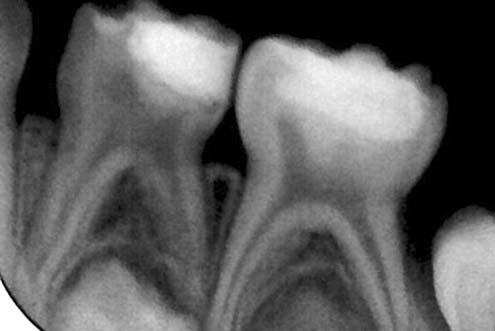
Фото 1. Пацієнтка З., 3,5 року, пряме покриття пульпи зубів 84, 85 матеріалом Biodentine, одномоментне відновлення матеріалом Ceram X duo, відтінок D1.
Особливості методики
Перед прямим покриттям пульпи необхідна медикаментозна обробка каріозної порожнини 2% розчином хлоргексидину (так само, як і перед проведенням прямої реставрації вітальних зубів). При застосуванні МТА слід провадити відстрочене пломбування, а після накладання МТА на ріг пульпи до моменту постійної реставрації в порожнині зуба необхідна наявність вологого агента [5, 42]. При застосуванні Biodentine провадиться одномоментне відновлення зуба через 12 хв [9, 30]. Препарат може не тільки вноситися на ріг пульпи, а й заповнювати весь основний шар дентину в каріозній порожнині, а наступним етапом може бути пряма реставрація фотополімерним матеріалом або непряма реставрація стандартними чи індивідуальними коронками. Завершальним етапом є рентгенологічний контроль після лікування і динамічний рентгенологічний контроль двічі рік.
Девітальна техніка. При виконанні цієї техніки пульпа піддається девіталізації. Формокрезол передбачає використання формули Buckley (або 20% розчин формокрезолу). Формокрезол фіксує тканини і використовується як антисептик [7, 17, 39, 43]. Девітальна техніка пульпотомії є альтернативним методом лікування при неможливості якісного виконання пульпектомії або вітальної пульпотомії, успіх девітальної пульпотомії у порівнянні зі зберігаючою технікою і регенеративною технікою невисокий [21, 27, 29]. Крім того, формокрезол дуже токсичний і має алергійні і мутагенні властивості. У зв'язку з такими побічними ефектами використання препаратів на основі формокрезолу в деяких країнах досить обмежене або припинене (Великобританія), як, наприклад, нейтрального буферного формаліну, популярної антисептичної пов'язки, яку застосовували понад 20 років тому. Вітальна пульпа в кореневих каналах забезпечує фізіологічний перебіг росту і розвитку тимчасового зуба та оточуючих структур, є надійним бар'єром для проникнення мікроорганізмів у періапікальні тканини, що перешкоджає розвитку одонтогенної інфекції [4]. Сучасна стоматологія при проведенні пульпотомії надає перевагу методикам, які передбачають застосування органозберігаючих препаратів для успішного функціонування зуба з вітальною кореневою пульпою [27, 48].
Зберігаюча техніка. У цій техніці девіталізуючий агент присутній у мінімальній кількості. Застосовуються препарати: глютаральдегід і сульфат заліза, цинкоксидевгенольна паста [11, 23, 37].
Регенеративна техніка. Це індуктивна техніка, оскільки при ній формується кальцинований бар'єр або стимулюється утворення репаративного дентину. Застосовуються препарати: гідроокис кальцію, КМБ (кістковий морфогенний білок, що стимулює утворення кісткової тканини, а також утворення дентину), МТА, Biodentine [5, 9, 25].
Вибір ізоляції
При виконанні вітальної пульпотомії слід пам'ятати про підтримку стерильних умов для пульпи. Такі умови допомагають створювати застосування рабердаму як ізоляції і використання іригаційного розчину. При виборі рабердаму для ендодонтичних маніпуляцій необхідно звернути увагу на щільність хустки. Хустки рабердаму бувають 5 видів щільності — тонкі (thin 0,12-0,18 mm), середні (medium 0,18-0,23 mm), щільні (heavy 0,23-0,29 mm), надщільні (extra heavy 0,29-0,34 mm) і особливо щільні (spesial heavy 0,34-0,39 mm). При тривалому впливі гіпохлориту натрію тонкі і середньої щільності хустки зазнають деградації, що може призвести надалі до розриву хустки під час стоматологічних маніпуляцій. При виконанні будь-якої маніпуляції, яка передбачає використання як іригаційного розчину гіпохлориту натрію, рекомендовано застосовувати щільні хустки рабердаму. Це запобігає передчасній деградації хустки під впливом активного розчину гіпохлориту натрію. Крім щільності хустки, необхідно звертати увагу на наявність ароматизаторів. Для запобігання проявам алергійних реакцій на аромати, що містяться в деяких видах латексних хусток, у стоматології дитячого віку їх використання небажане.
Вибір іригаційного розчину
Основним завданням іригаційного розчину при виконанні вітальної ампутації є підтримка стерильних умов робочого поля. 1,0-5,25% розчин гіпохлориту натрію та 2% розчин хлоргексидину — іригаційні розчини, які використовуються для цієї мети [12, 13, 15]. 2% розчин хлоргексидину забезпечує стерильні умови при виконанні вітальної ампутації, якщо ж в ролі іригаційного розчину обрано гіпохлорит натрію, слід пам'ятати про те, що крім антисептичних властивостей, цей розчин має коагулюючу і лізуючу дію. Чим вищий відсоток іригаційного розчину, тим вищі його коагулюючі і лізуючі властивості [24, 36].
Гемостаз і візуалізація меж запалення
Наступною особливістю при виконанні вітальної ампутації є візуалізація меж запалення [19, 20, 28]. Велика кількість ускладнень після вітальної пульпотомії виникає через змазану картину поширеності запального процесу. Після пульпотомії та іригації необхідно домогтися гемостазу кукси пульпи. Розрізняють медикаментозний і природний гемостаз [44, 45, 48]. Медикаментозний гемостаз — це зупинка кровотечі кукси аплікаційним способом із застосуванням медикаментозних препаратів (препарати на основі формокрезолу, сульфату заліза) [16, 22, 23, 37, 43]. Але такий вид гемостазу має кілька небажаних наслідків. При екстреній зупинці кровотечі часто не видно меж запалення, які легко визначити при проведенні природного гемостазу (якщо кровотеча кукси пульпи триває понад 5 хвилин при нормі 3-5 хв, можна говорити про запалення кореневої частини пульпи, і тоді слід обрати пульпектомію як ендодонтичне лікування).
При застосуванні гемостатичних препаратів на основі сульфату заліза з'являється ймовірність віддаленої патологічної резорбції коренів і фуркаційної зони (фото 2, 3) [16, 22, 34, 47].
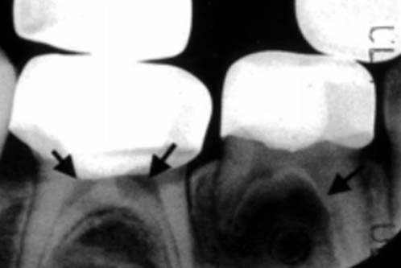
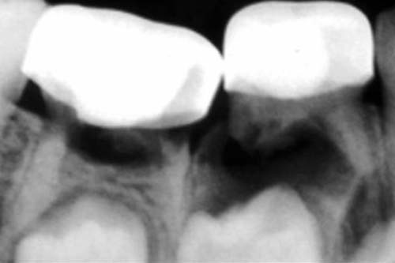
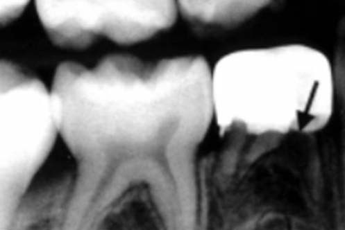
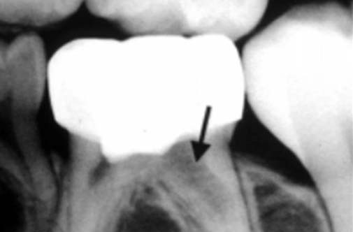
Фото 2 а, б, в, г. Ампутація із застосуванням сульфату заліза. AAPD [8].
При застосуванні формокрезолу [37, 39] як гемостатичного препарату складно контролювати глибину імпрегнації і якість промивання кукси від гемостатичного розчину, що може призвести до подальших ускладнень, таких як патологічна резорбція фуркаційної зони, періодонтит. Було проведено дослідження [37] у 54 дітей віком від 3-х до 9-ти років на 90 тимчасових молярах. Вибрані зуби були вилікувані із застосуванням сульфату заліза і формокрезолу. У подальшому зуби були оцінені клінічно і рентгенологічно протягом року з 3-місячним інтервалом. Результат: через один рік клінічний успіх склав при застосуванні сульфату заліза 96,7%, формокрезолу — 86,7%. Рентгенологічний успіх значно знижувався протягом року в усіх групах і становив при застосуванні сульфату заліза 63,3%, при застосуванні формокрезолу — 56,7% [21, 27, 29, 34, 37]. Таким чином, застосування гемостатичних розчинів на основі сульфату заліза і формокрезолу може призвести до патологічної резорбції і передчасної втрати тимчасового зуба [38, 39].
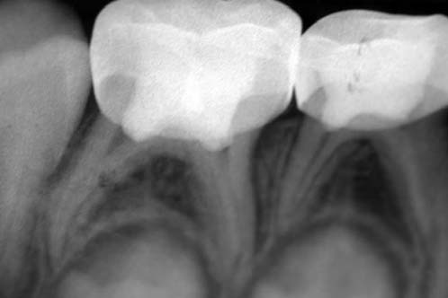
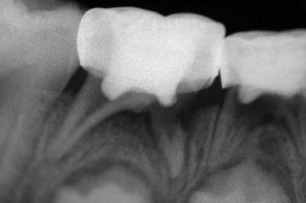
Фото 3 а, б. Ампутація із застосуванням сульфату заліза: а — безпосередньо після лікування, б — через 6 міс. 2006 р., Vargas et al. [50].
Межі пульпотомії
При проведенні вітальної пульпотомії необхідно дотримуватися анатомічних меж ампутації, оскільки недотримання цих меж може призвести до неконтрольованої кровотечі, а це, у свою чергу, до вибору неправильної подальшої тактики (екстирпація) або до ускладнень у вигляді періодонтиту [4, 8, 19, 20]. Пульпотомію необхідно проводити в устьовій зоні, де розташовуються судини капілярного типу. Зона кореневої пульпи починається на 0,5-1 мм нижче устьової частини. Одним з показників правильності проведення пульпотомії є природний гемостаз протягом 3-5 хв, а також заповнення усть обтураційним матеріалом, підтверджене на рентгенограмі.
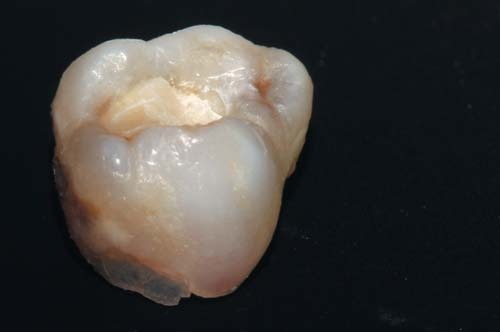
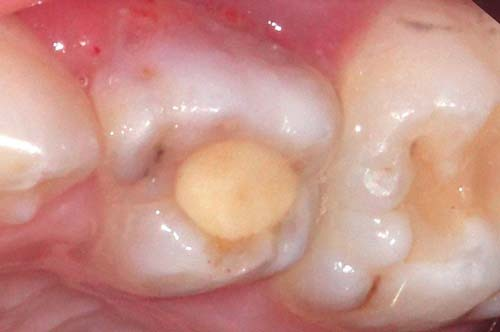
Фото 4 а, б. Пацієнт 5 років, патологічна резорбція коренів зуба 54.
При правильному проведенні ампутації обтураційний матеріал має вигляд трикутника з вершиною, зверненою апікально, або вигляд трикутника зі зрізаною вершиною, також зверненою апікально (фото 5) [44, 45, 48].
Вибір матеріалу
Тривалий час серед стоматологічних обтураційних устьових матеріалів використовувалися матеріали на основі цинкоксидевгенольної пасти. Цинкоксидевгенольна паста застосовується при виконанні зберігаючої пульпотомії і не призводить до утворення дентинного бар'єру, а лише спрямована на герметичну устьову обтурацію з антисептичною дією на куксу пульпи. Успіх лікування за допомогою цинкоксидевгенольної пасти при вітальній пульпотомії знижується, оскільки передбачає застосування препаратів на основі сульфату заліза або формокрезолу [11, 14]. Наступним з рекомендованих при пульпотомії матеріалів є препарат на основі гідроксиду кальцію. Він стимулює утворення репаративного дентинного містка, і таким чином зберігається вітальність пульпи [11, 25].
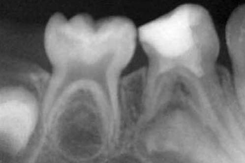
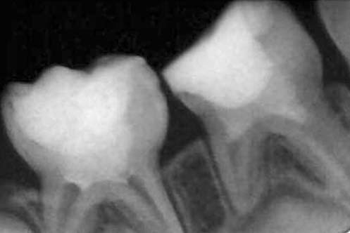
Фото 5 а, б. А — пацієнт 3-х років, вітальна пульпотомія зуба 84, устьова обтурація матеріалом МТА, відновлений матеріалом Ceram X duo, відтінок D1. Б — через 6 місяців. Позитивна динаміка в зубі 84, вітальна пульпотомія зуба 85, устьова обтурація матеріалом МТА, відновлення матеріалом Ceram X duo, відтінок D1.
Гідроокис кальцію прийнято вважати матеріалом вибору при прямому покритті пульпи. Гістологічно відбувається повне утворення дентинного містка між здоровою кореневою пульпою і гідроокисом кальцію. При безпосередньому накладенні гідроокису кальцію на тканину пульпи відбувається некроз прилеглої частини пульпи за рахунок вираженого (рН 12,5) лужного середовища і запалення навколишньої тканини. Через 4 тижні утворюється новий одонтобластичний шар, а також дентинний місток. При цьому виділяють 3 гістологічних зони, що утворюються через 4-9 днів: коагуляційний некроз; глибокі змінені в кольорі зони з хаотичним остеодентином; відносно здорова тканина пульпи, трохи гіперемована, що міститься під одонтобластичним шаром. Утворення дентинного містка відбувається на межі некротизованої тканини і вітальної запаленої тканини. Під зоною некрозу клітини підлеглої тканини пульпи диференціюються в одонтобласти і утворюють дентинний матрикс. Гідроксид кальцію є швидше ініціатором, ніж субстратом для відновлення тканини [25].
Ризики використання гідроокису кальцію при пульпотомії
Надлишкова стимуляція лугом може стати причиною метаплазії пульпарної тканини в грануляційну. Наявність запального процесу у пульпі сприяє проникненню моноцитів з кровотоку в позасудинний простір, де вони диференціюються в остеокласти, що викликають резорбцію. Можливі мікропідтікання можуть призводити до потрапляння великої кількості бактерій у пульпу, що може нівелювати всі переваги гідроксиду кальцію. На сьогодні препарати на основі гідроксиду кальцію не можуть бути однозначно рекомендованими для техніки пульпотомії у стоматології дитячого віку, а також у постійних зубах з незавершеним апексогенезом, враховуючи вищеперелічені ризики, але як і раніше залишаються матеріалами вибору [11, 25].
У 1993 році у США був розроблений біоактивний матеріал для обтурації кореневих каналів, що має високий репаративний потенціал, — МТА (Мінерал Триоксид Агрегат). В останні роки на ринку стоматології МТА представлений матеріалами різних виробників, які також успішно використовуються і демонструють гарні клінічні результати: ProRoot (Дентсплай), МТА (Сеrcamed, Польща), Радоцем П (Радуга-Р), Тріоксидент (ВладМіВа), Рутдент (TehnoDent), Biodentine™ (Septodont, Франція). МТА у порівнянні з гідроксидом кальцію має більш виражену здатність до підтримання цілісності тканини пульпи, утворення товщого дентинного містка, менша ймовірність запалення, яке призводить до гіперемії або некрозу пульпи. Клінічна і рентгенологічна ефективність використання МТА при лікуванні патології пульпи тимчасових зубів методом вітальної пульпотомії в терміни спостереження 12-24 місяці становила 94-100% [5, 10, 21, 29, 42]. У деяких випадках дослідники виявляли облітерацію кореневих каналів [21, 27, 29]. Під час гістологічного дослідження після лікування з використанням МТА спостерігається нормальна будова пульпи і шару одонтобластів, відсутність ознак запалення у більшості зразків, менша частота некрозів на межі матеріалу і пульпи зуба в порівнянні з гідроксидом кальцію, товщий дентинний місток зі значно меншою кількістю тунелів [10, 18]. Процедура устьової обтурації із застосуванням МТА передбачає природний гемостаз (стерильна ватна кулька, змочена у фізіологічному розчині або 2% розчині хлоргексидину) і безпосередньо накладення пов'язки на устя кореневих каналів з матеріалу на основі МТА. Матеріали на основі МТА застигають і утворюють міцний нерозчинний бар'єр через 4-7 годин при наявності вологого агента (волога ватна кулька), тому рекомендовано проводити відтерміновану реставрацію коронкової частини зуба. З іншого боку, при проведенні пульпотомії вологи, що надходить з кукси пульпи, досить для повноцінного затвердіння МТА, і можна застосовувати безпосередню реставрацію коронки зуба, перекривши шар МТА склоіономерним цементом хімічного (наприклад, Fudji IX) або світлового затвердіння (Riva LC), але для прогнозованості лікування виробники рекомендують не порушувати протокол роботи з МТА (фото 6) [5].
Одним із нових сучасних матеріалів є біоактивний матеріал Biodentine (Septodont) [9], який також рекомендований для прямого і непрямого покриття пульпи, закриття перфорацій, апексифікації. Препарат складається з порошку і рідини. Порошок містить трикальцій і дикальцій силікати і карбонат кальцію. Рідина містить водний розчин хлориду кальцію з додаванням полікарбоксилату. Після апаратного змішування препарату утворюється гідроксид кальцію. Час застигання Biodentine — 12 хвилин, що робить роботу з цим препаратом простішою, ніж з МТА, оскільки можна провадити процедуру пульпотомії і відновлення коронки зуба в одне відвідування [30, 40].

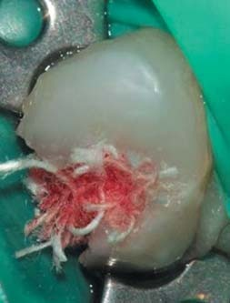
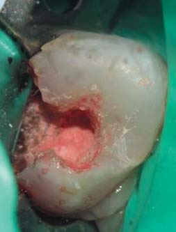
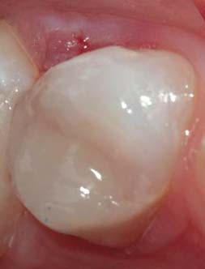
Фото 6 а, б, в, г. Пацієнт 6 років, вітальна ампутація зуба 64, природний гемостаз, обтурація матеріалом МТА, відтерміноване відновлення матеріалом Ceram X duo, відтінок D1.
У дослідженнях in vitro та in vivo матеріал Biodentine не чинив руйнівної дії на клітини пульпи, більше того, він стимулював формування третичного дентину [30, 40]. Утворення дентинного містка спостерігалося як при прямому, так і при непрямому покритті пульпи. Клінічні дослідження використання Biodentine для прямого покриття пульпи продемонстрували успішні результати більш ніж у 80% випадків [9]. У порівнянні з матеріалами на основі гідроксиду кальцію Biodentine має поліпшені механічні властивості, меншу розчинність, надійні герметизуючі властивості. На сьогодні клінічна ефективність використання матеріалу Biodentine ще недостатньо вивчена. Крім усіх перерахованих вище властивостей препарату, існує ще одна важлива властивість — це термін застигання. Якщо для затвердіння МТА потрібно кілька годин і це ускладнює лікування, оскільки необхідно робити реставрацію в наступне відвідування, то при застосуванні Biodentine немає необхідності проводити лікування у два етапи, бо час затвердіння цього препарату становить лише 12 хв.
Окрім перерахованих методик, існує така, яка рекомендована для використання в регіонах з низьким рівнем соціально-економічного розвитку. Для лікування патології пульпи тимчасових зубів, а також постійних зубів з незакінченим формуванням коренів методом вітальної пульпотомії запропонована концепція «стерилізація ураження і відновлення тканин» (LSTR — «lesion sterilization and tissue repair») [46]. При лікуванні патології пульпи зубів у дітей методом вітальної ампутації відповідно до цієї методики використовують суміш антибактеріальних препаратів, до складу якої входять метронідазол, ципрофлоксацин і міноциклін. Концентрація препаратів у суміші дозволяє досягти вираженого антибактеріального ефекту і стерилізувати каріозні ураження, некротизовану пульпу та інфіковані кореневі канали. Клінічний ефект цієї методики невисокий. За даними досліджень Trairatvorakul із співавт. (2012), клінічний ефект при використанні цієї антибактеріальної суміші препаратів становив 75%, рентгенологічний — 36,7% в терміни спостереження 24-27 місяців [46]. У сучасній стоматології існує великий вибір матеріалів і препаратів, які мають антибактеріальну, репаративну дію і є біосумісними, клінічний успіх яких сягає 100%. Пульпотомія тимчасових зубів у сучасній стоматології стала безпечною, простою та органозберігаючою процедурою, має прогнозовані результати [40, 42, 44].
Техніка вітальної пульпотомії
- Діагностичний рентгенологічний знімок.
- Інфільтраційна анестезія.
- Ізоляція рабердамом (альтернативні методи ізоляції при виконанні вітальної пульпотомії застосовувати не рекомендується, оскільки інші методи ізоляції не дозволяють підтримати стерильні умови, які так необхідні при виконанні вітальної пульпотомії).
- Механічна обробка каріозної порожнини.
- Зрошення (2,5-3,2% розчин гіпохлориту натрію або 2% розчин хлоргексидину).
- Розкриття порожнини зуба.
- Пульпотомія гострим стерильним бором або гострим екскаватором на 1 мм нижче устьової частини пульпи.
- Іригація обраним раніше розчином.
- Гемостаз.
- Обтурація кукси пульпи.
- Рентгенологічний контроль.
- Відстрочена (через 24 години) герметична реставрація композитним матеріалом або стандартною металевою коронкою.
Незворотні пульпіти тимчасових зубів
Незворотними вважаються пульпіти, при яких пульпа зазнає функціонально-гістологічних змін і її повне відновлення неможливе [20, 28, 44]. При діагнозі незворотний пульпіт мінімально-інвазивні терапевтичні методи лікування пульпи (пряме покриття, часткова пульпотомія, повна пульпотомія), на жаль, не розглядаються, і єдино правильним методом лікування за такого діагнозу буде ендодонтичне лікування методом екстирпації пульпи з подальшою обтурацією кореневих каналів.
Найбільшу складність при діагностиці пульпітів становлять перехідні стадії (зворотного в незворотний пульпіт і незворотного пульпіту в періодонтит). Кожну з таких стадій можна розглядати як окремий етап запального процесу. Стадії є фіксованими і постійними тільки на гістологічних зрізах, a in vivo запальний процес динамічний і постійно мінливий [45, 48]. Незворотні пульпіти — це межові швидкопрогресуючі стани пульпи, які складно діагностувати у тимчасових зубах, і клінічна картина, включаючи рентгенологічні дані, являє собою симптомокомплекс періодонтиту. Успіх лікування буде вищим, якщо зуб з діагнозом «незворотний пульпіт» пролікувати за протоколом хронічного періодонтиту (у тому числі з використанням антисептичних пов'язок) [8, 19, 20]. Отже, одним із критеріїв для вибору ендодонтичного лікування методом екстирпації є наявність спонтанного болю в анамнезі.
Якщо клінічна картина незворотного пульпіту підтверджена, застосовується метод пульпектомії. Вибір методу пульпектомії — вітальної чи девітальної — найчастіше залежить від встановлення контакту між лікарем і дитиною. Якщо лікар зумів встановити контакт і виконати ін'єкційну анестезію, перевага надається методу вітальної пульпотомії. Якщо дитина не дозволяє якісно виконати ін'єкційну анестезію, надається перевага методу девітальної пульпектомії [35]. Обираючи метод пульпектомії, слід оцінювати матеріали, що застосовуються у стоматології дитячого віку, з точки зору максимальної безпеки як для організму в цілому, так і для зачатка постійного зуба.
При виконанні методу девітальної пульпектомії одним з девіталізуючих компонентів є параформальдегід. Деякі дослідження говорять про мутагенні, канцерогенні і токсичні властивості параформальдегідовмісних препаратів [26, 33]. У цих дослідженнях враховується доза, а також час впливу досліджуваного компонента на організм. З цих досліджень можна зробити висновки про високу токсичність і мутагенність при тривалому впливі формальдегідовмісних препаратів (девітальна ампутація), також можна говорити про низьку успішність ендодонтичного лікування при застосуванні методу девітальної ампутації і виконанні етапу медикаментозного гемостазу за допомогою формокрезолу. При виконанні девітальної пульпектомії говорити про мутагенний, канцерогенний і токсичний вплив на організм не доводиться, тому що доза і експозиція параформальдегідовмісного препарату при герметичній тимчасовій реставрації не викликають негативних наслідків для організму в цілому, а успіх залишається високим, як і при вітальній екстирпації.
Вибір іригаційного розчину при пульпектомії
Основними для іригаційного розчину при пульпектомії є антибактеріальний і лізуючий ефекти [12, 13, 15, 24]. Для іригації тимчасових і постійних зубів існують два основних іригаційних розчини, які мають такі властивості. Це гіпохлорит натрію і хлоргексидин. Однак багатьох стоматологів досі хвилює питання — якому іригаційному розчину і якої концентрації надати перевагу в стоматології дитячого віку? Якщо при пульпотомії основними властивостями, які повинні мати іригаційні розчини, є антисептична і коагуляційна, то при пульпектомії є ще одна важлива властивість — це лізис тканин, оскільки крім магістральних кореневих каналів, тимчасові зуби (так само, як і постійні) мають латеральні відгалуження — ті зони, в яких механічне очищення неможливе. З двох названих розчинів (гіпохлорит натрію і хлоргексидин) цю властивість має лише гіпохлорит натрію. Але не слід забувати про те, що лізуюча активність цього розчину безпосередньо залежить від його концентрації (чим вища концентрація гіпохлориту натрію, тим вища його лізуюча активність). З другого боку, для повного лізису тканин у кореневому каналі слід робити тривалу іригацію. Наприклад, при використанні 5,25% розчину гіпохлориту натрію як іриганта необхідні 20 хв безперервної іригації в одному кореневому каналі для того, щоб домогтися повного лізису тканини пульпи.
Але в стоматології дитячого віку однією з особливостей роботи є короткий термін прийому. Дитячий стоматолог повинен виконати роботу максимально швидко через вікові особливості пацієнта, тому проводити 40-60-хвилинну іригацію триканального тимчасового зуба недоцільно. Крім часових обмежень, є думки про цитотоксичність 5,25% розчину гіпохлориту натрію у стоматології дитячого віку, тому й пропонується використовувати розчини меншої концентрації з наступним застосуванням кальцієвмісних паст для використання переваг синергичного ефекту цих двох речовин. Іншим розчином для іригації є 2% розчин хлоргексидину, який також має низку позитивних властивостей (руйнування бактеріальної клітини), але має недолік — не руйнує ліпополісахариди (включення бактеріальної клітини, які можуть призвести до персистуючого запального процесу). Але і в цьому випадку такий недолік нівелюється за рахунок обтурації каналів кальцієвмісною пастою. 1,0-5,25% розчини гіпохлориту натрію і 2% розчин хлоргексидину однаковою мірою демонструють позитивну динаміку при використанні їх як іригантів для тимчасових зубів і тому є іригаційними розчинами вибору (фото 7) [12, 13, 15, 24, 36].
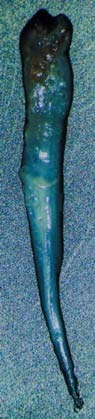
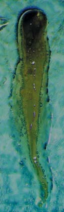
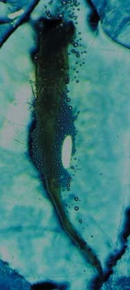
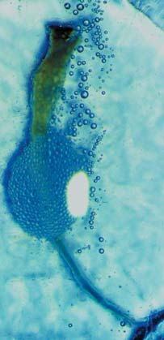
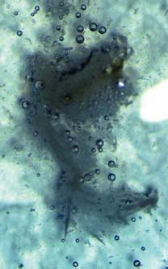
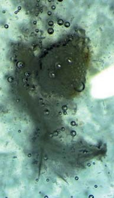
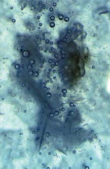
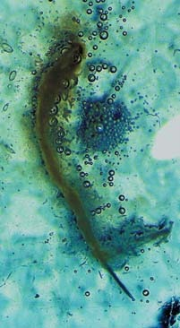
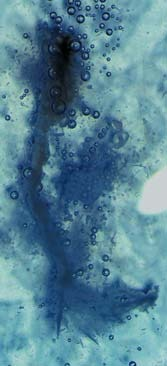
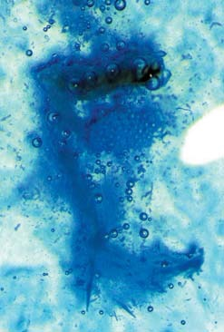
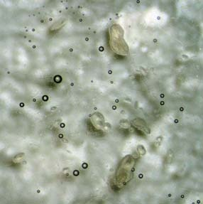
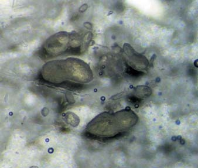
Фото 7. Розчинення тканини пульпи непідігрітим 5,25% розчином гіпохлориту натрію. Час повного розчинення органічного компонента — 20 хв.
Вибір обтураційного матеріалу
Багато років основними матеріалами для обтурації кореневих каналів тимчасових зубів є кальцієвмісні та цинкоксидевгеноловмісні пасти. Пасти, що застосовуються для пломбування кореневих каналів тимчасових зубів, мають бути нетоксичними, такими, що резорбуються і діють антисептично [35, 44, 45, 48].
Вибір матеріалу для обтурації кореневих каналів тимчасових зубів залежить від двох чинників: діагнозу; стадії формування коренів (табл. 1).
| Пульпіти | Незавершене формування кореня | Період стабілізації | Період резорбції |
|---|---|---|---|
| Жива запалена пульпа | Са(ОН)2 | ЦОЕ | Са(ОН)2/Са(ОН)2 +йодоформ |
| Інфікована пульпа/пульпа, що розпалася | Антисептичні пасти Са(ОН)2/Са(ОН)2 +йодоформ | Антисептичні пасти Са(ОН)2/Са(ОН)2 +йодоформ (можливе пломбування ЦОЕ) | Са(ОН)2 |
Техніка девітальної пульпектомії
I етап
- Рентгенологічна діагностика.
- Механічна обробка каріозної порожнини твердосплавними борами за допомогою турбінного, кутового або підвищуючого наконечника і ручних інструментів (екскаватори).
- Медикаментозна обробка каріозної порожнини (2% розчин хлоргексидину).
- Розтин порожнини зуба в зоні рогу пульпи.
- Накладання девіталізуючої пасти (Девіт-П, Девіт-С).
- Герметична пов'язка (ватна кулька + Tempolat або Беладонт).
II етап
- Ізоляція робочого поля (рабердам або альтернативні методи ізоляції).
- Зняття герметичної пов'язки.
- Розкриття порожнини зуба.
- Пульпотомія бором або екскаватором.
- Визначення робочої довжини (метод електронної апекслокації або метод паперового штифта).
- Коренева пульпектомія ручними або машинними ендодонтичними інструментами.
- Механічна обробка кореневих каналів.
- Іригація кореневих каналів (1,0-5,25% розчин гіпохлориту натрію або 2% розчин хлоргексидину).
- Висушування кореневих каналів паперовими пінами.
- Обтурація кореневих каналів препаратами на основі гідроксиду кальцію (якщо до фізіологічної зміни залишилося менше 2,5 років) або цинкоксидевгенольною пастою без параформальдегіду (якщо до фізіологічної зміни залишилося понад 2,5 року) з урахуванням поставленого діагнозу.
- Рентгенологічний контроль.
- Ізолююча прокладка із склоіономерного цементу (Fudji IX, Riva).
- Відновлення коронкової частини зуба (пряма/непряма реставрація) [8, 19, 20].
Техніка вітальної пульпектомії
- Рентгенологічна діагностика.
- Інфільтраційна анестезія (анестетики на основі артикаїну, мепівакаїну).
- Ізоляція робочого поля (рабердам або альтернативні методи ізоляції).
- Розкриття порожнини зуба.
- Коронкова пульпотомія бором або екскаватором.
- Визначення робочої довжини (метод електронної апекслокації або метод паперового штифта).
- Коренева пульпектомія ручними або машинними ендодонтичними інструментами.
- Іригація кореневих каналів (5,25% розчин гіпохлориту натрію або 2% розчин хлоргексидину).
- Висушування кореневих каналів паперовими пінами.
- Обтурація кореневих каналів препаратами на основі гідроксиду кальцію (якщо до фізіологічної зміни залишилося менше 2,5 років) або цинкоксидевгенольною пастою без параформальдегіду (якщо до фізіологічної зміни залишилося понад 2,5 року) у залежності від діагнозу.
- Рентгенологічний контроль після обтурації.
- Ізолююча прокладка із склоіономерного цементу (Fudji IX, Riva).
- Відновлення коронкової частини зуба (пряма/непряма реставрація) [4, 8, 19, 20] (фото 8).
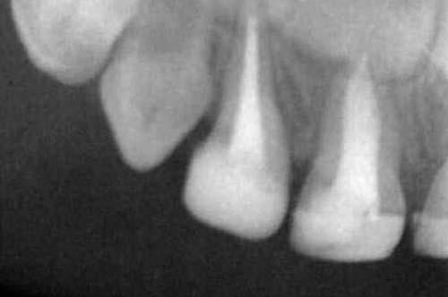
Фото 8. Пацієнт 2-х років, пульпектомія зубів 51, 52, пломбування кореневих каналів цинкоксидевгенольною пастою, відновлення матеріалом Ceram X duo, відтінок D1.
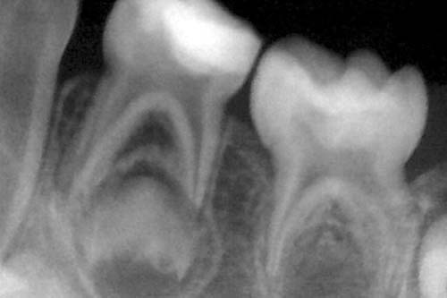
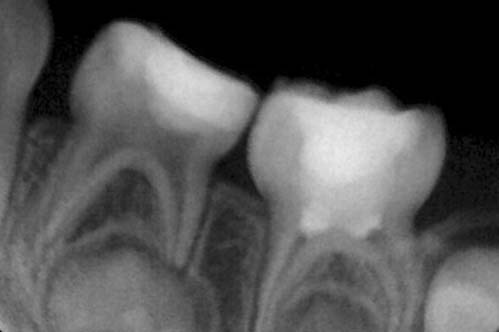
Фото 9 а, б. А — пацієнт 3-х років. Пряме покриття зуба 74, відновлення матеріалом Ceram X duo, відтінок D1. Б — через 6 місяців після відновлення. Позитивна динаміка в зубі 74 і вітальна ампутація зуба 75, МТА, відновлення матеріалом Ceram X duo, відтінок D1.
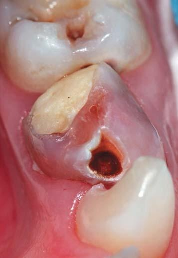
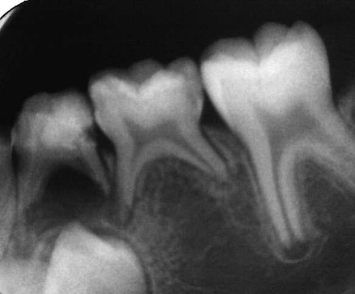
Фото 10 а, б. А — пацієнт 6 років, зуб 74 через 1 рік після лікування із застосуванням формальдегідовмісних препаратів.
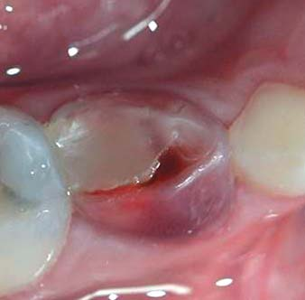
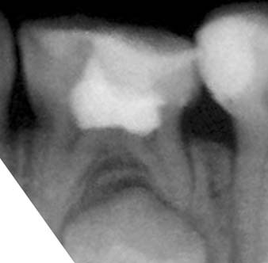
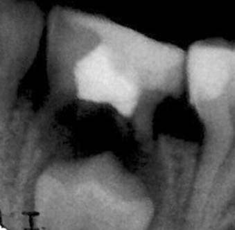
Фото 11 а, б, в. А, б — пацієнт Б., через 6 місяців після лікування, в — через рік після лікування.
Висновки
Існує безліч методик і рекомендацій щодо ендодонтичного лікування тимчасових зубів. Вони можуть кардинально відрізнятися одна від одної передусім своєю філософією і, як наслідок, використовуваними для терапевтичних цілей матеріалами. Але перш ніж обирати ту чи іншу методику чи якусь певну класифікацію захворювання, необхідно провести оцінку: клінічна картина — гістологічна картина — прогноз — доступний матеріал.
Наприклад, якщо ми ставимо діагноз (симптом) «зворотний пульпіт», маємо на увазі, що наші терапевтичні маніпуляції повинні привести до повного відновлення і збереження пульпи. Але, з другого боку, зворотний пульпіт є одним з показань до пульпотомії (в тому числі і девітальної). У цьому випадку і виникає питання: зуб, лікований за протоколом пульпотомії, а тим більше девітальної, не може мати діагноз (симптом) «зворотний пульпіт», оскільки тканина пульпи не відновлена, не збережена, а при використанні методу девітальної пульпотомії і коренева пульпа також залишається нежиттєздатною. Тому можна зробити висновок про те, що «зворотний пульпіт» може бути лікований методом прямого або непрямого покриття пульпи біоактивними матеріалами згідно з органозберігаючою концепцією лікування пульпи (фото 9).
При виконанні, наприклад, девітальної пульпотомії необхідно також оцінювати ризики і мету процедури. І ми самі повинні відповісти на питання, чи доцільно залишати фіксовану кореневу пульпу в кореневих каналах, одномоментно ризикуючи, застосувавши формальдегідовмісні препарати, враховуючи їх цитотоксичність і мутагенність, а також невисокий відсоток успішності лікування такими методами (фото 10).
Література
- Быков В.Л. Гистология и эмбриология органов полости рта человека, 1998.
- Лошакова Л.Ю. и соавт. Заболевания пульпы временных зубов, 2006.
- Струков А.И., Серов В.В. Патологическая анатомия, 1995.
- Трезубов В.Н., Арутюнов С.Д. — М., Клиническая стоматология, 2015.
- Торабинеджад М. Клиническое применение Минерал Триоксид Агрегата. // ДентАрт. — 2001. — 2. — с.41-47.
- Хидирбегишвили О. Современная кариесология, 2013.
- Яцук А.И., Михайловская В.П., Мельниченко Э.М. Ампутационный метод лечения пульпита временных зубов с использованием формокрезола.// Современная стоматология. — 2000. — №2. — с.42-43.
- Guideline on pulp therapy for primary and young permanent teeth. American Association of Pediatric Dentistry Reference Manual 2004-2005. Pediatr Dent 2004;7:115-16.
- About I., Laurent P., Tecles O. Bioactivity of Biodentine: a Ca3SiO5 based dentin substitute.//J Dent Res. — 2010. — 89 (Spec Iss B): abstract number 150.
- Agamy H.A., Bakry N.S., Mounir M.M.F., Avery D.R. Comparison mineral trioxide aggregate and formocresol as pulp capping agents in pulpotomized primary teeth.//Pediart Dent. — 2004. — 26. — P.302-309.
- Alacam A. Pulpal tissue changes following pulpotomies with formocresol, glutaraldehyde — calcium hydroxide, glutaraldehyde — zinc oxide eugenol pastes in primary teeth.//J Pedod. — 1989. — 13. — P.123-132.
- Alacam A. The effect of various irrigants on the adaptation of paste filling in primary teeth.//J Clin Pediatr Dent 1992;16:243-46.
- Baumgartner J.C., Cuenin P.R: Efficacy of several concentrations of sodium hypochlorite for root canal irrigation.//J Endod 18:12, 605-12, Dez. 1992.
- Berger J.E. Pulp tissue reaction to formocresol and zinc oxide-eugenol.//J Dent Child. — 1965. — 32. — P.13-28.
- Carlos Estrela et al. Mechanism of Action of Sodium Hypochlorite. Braz Dent.// J (2002) 13(2): 113-117.
- Casas M.J., Kenny D.J., Johnston D.H., Judd P.L. Long-term outcomes of primary molar ferric sulfate pulpotomy and root canal therapy.//Pediatr Dent. — 2004. — 26. — P.44-48.
- Casas M.J., Kenny D.J., Judd P.L., Johnston D.H. Do we still need formocresol in pediatric dentistry.//J Can Dent Assoc. — 2005. — 71. — P.749-751.
- Cox C.F., Subay R.K., Ostro E., Suzuki S., Suzuki S.H. Tunnel defects in dentin bridges: their formation following direct pulp capping.//Open Dent. — 1996. — 21. — P.4-11.
- Clifton O. Dummett Jr., Hugh M. Kopel, Pediatric endodontics.
- Camp JH. Pediatric endodontic treatment. In: Pathways of the pulp. St Louis: 1994. — P.633-71.
- Eidelman E., Odont Holan G., Fuks A.B. Mineral trioxide aggregate vs formocresol in pulpotomized primary molars: A preliminary report.//Pediatr Dent. — 2001. — 23. — P.15-8.
- Fei A.L., Udin R.D., Johnson R: A clinical study of ferric sulfate as a pulpotomy agent in primary teeth. Pediatr Dent 13:327-32, 1991.
- Fuks A., Holan G., Davis J., Eidelman E: Ferric sulfate versus formocresol in pulpotomized primary molars: preliminary report. J Dent Res 73:885, [Abstr №27], 1994, and Pediatr Dent 16:158-59, 1994.
- Gomes B.P.F.A., Ferraz C.C.R., Vianna M.E., Berber V.B., Teixeira F.B., Souza Filho F.J. In vitro antimicrobial activity of several concentrations of sodium hypochlorite and chlorhexidine gluconate in the elimination of Enterococcus faecalis. Int Endod.//J. 2001;34:424-8.
- Gruythuysen R.J., Weerheijm K.L. Calcium hydroxide pulpotomy with a light cured cavity sealing material after two years.//J Dent Child. — 1997. — 64. — P.251-253.
- Gunter Speit and Oliver Merk. Evaluation of mutagenic effects of formaldehyde in vitro/ Mutagenesis (2002) 17 (3): 183-187.
- Holan G., Eidelman E., Fuks A.B. Long term evaluation of pulpotomy in primary molars using mineral trioxide aggregate or formocresol.//Pediatr Dent. 2005. — 27. — P.129-136.
- Hobson P. Pulp treatment of deciduous teeth.//Br Dent J. 1970;3:23-28.
- Jabbarifar S.E., Khademi D.D., Ghasemi D.D. Success rates of formocresol pulpotomy versus mineral trioxide aggregate in human primary molar tooth.//J Res Med Sci. — 2004. — 6. — P.55-8.
- Koubi G., Colon P., Franquin J.C., Hartmann A., Richard G., Faure M.O., Lambert G. Clinical evaluation of the performance and safety of a new dentine substitute, Biodentine, in the restoration of posterior teeth — a prospective study. — 2012. — Clin. Oral. Investig. — Mar 14.
- Langeland K., Langeland L.K. Pulp reactions to cavity and crown preparation.//Aust Dent J 1970; 15:261-276.
- Langeland K. Management of the inflamed pulp associated with deep carious lesion.//J Endod 1981;7:169-181.
- Lewis B.B., Chestner S.B. Formaldehyde in dentistry: a review of mutagenic and carcinogenic potential.//J Am Dent Assoc 1981; 103(3):429-34.
- Nikki L. Smith etc: Ferric sulfate pulpotomy in primary molars. Pediatric Dentistry — 22:3, 2000.
- Ozalp, N., Saroglu, I., Sonmez, H. Evaluation of various root canal filling materials in primary molar pulpectomies: an in vivo study.//Am J Dent. — 2005. — 18: — p.347-350.
- Primo LSSG. Evaluation of the efficacy of irrigation solutions in removing root smear layer from anterior deciduous teeth. [Doctor's thesis] Sao Paulo: University of Sao Paulo; 2000. 131p.
- Raghavendra Havale et al. Clinical and Radiographic Evaluation of Pulpotomies In Primary Molars With Formocresol, Glutaraldehyde and Ferric Sulphate — OHDM — Vol.12 — No.1 — March, 2013. — р.24-31.
- Ranly DM. Assessment of the systemic distribution and toxicity of formaldehyde following pulpotomy treatment: part one. ASDC J Dent Child 1985; 52(6):431-4.
- Ranly, D.M., Fulton, R. Reaction of rat molar pulp tissue to formocresol, formaldehyde, and cresol. J Endod. 1976;2:176-184.
- Raskin, A., Eschrich, G., Dejou, J., About I. In Vitro Microleakage of Biodentine as a Dentin Substitute Compared to Fuji II LC in Cervical Lining Restorations.//J Adhes Dent. — 2012. — Apr 23.
Повний список літератури в редакції.